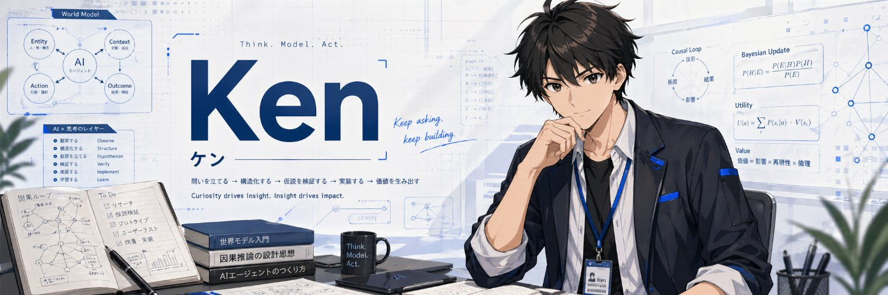
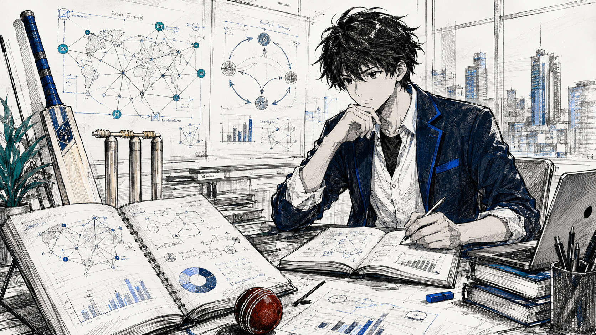
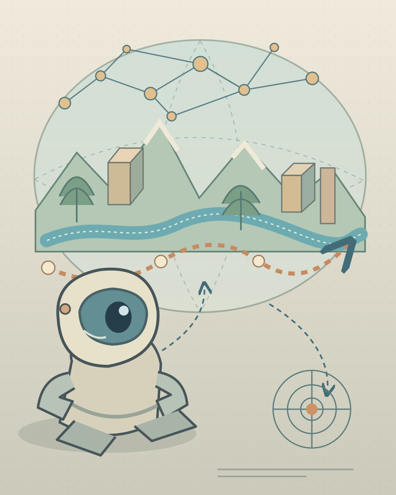
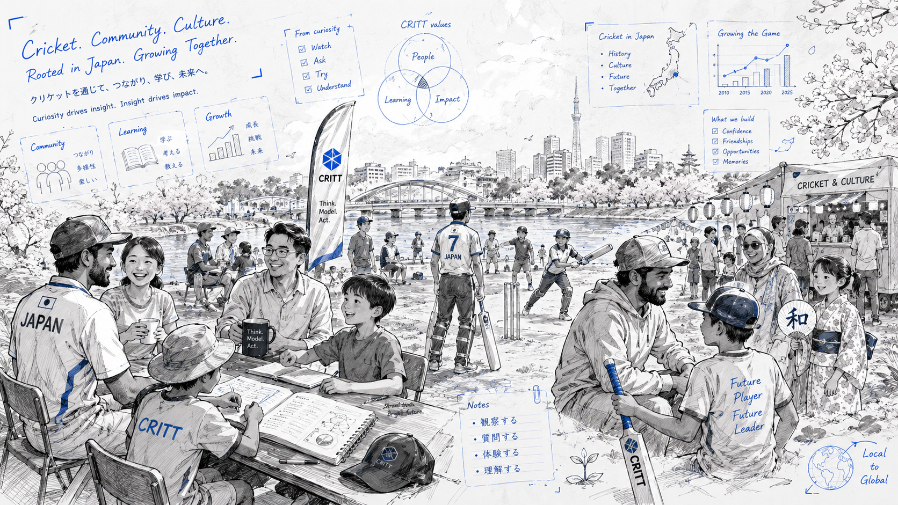
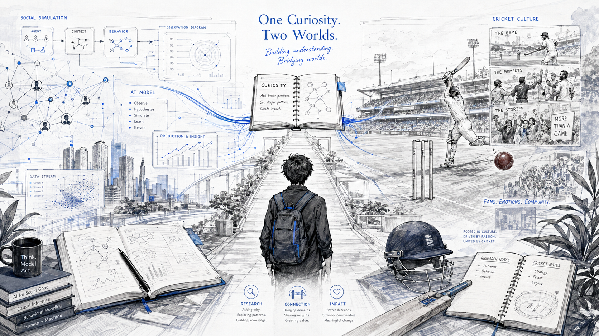

Think.
Model. Act.
Curiosity drives insight. Insight drives impact.
本物は、やる気、元気、青木、の青木健一55歳です。 IT企業のR＆D部門にて、AI周りの動向調査、技術検証などをしております。
Curiosity across domains.
AI、社会、データ、脳、感情、文化。分野をまたぎながら、 「考える → モデル化する → 試す」を続けています。

IT企業のR＆D部門にて、AI周りの動向調査、技術検証などをしております。 今の関心は世界モデル、社会シミュラクラ、因果推論、ネットワーク科学、 脳神経科学、Affective Computing、などです。
研究だけでなく、プロンプト、社会シミュレーション、可視化、漫画、小説、 クリケット文化づくりなど、気になったものはまず作って公開するスタイルです。
Different worlds, one curiosity.
世界をモデル化すること、社会をシミュレーションすること、 クリケット文化を育てること。異なる領域を、同じ好奇心から進めています。

World Models
世界モデルを知り、作り、使う。基本概念、研究史からミニ実装、Physical AIへの応用までを日本語で解説する入門プロジェクト。

CRITT
クリケットを、物語とAIでひらく。 漫画、小説、選手、試合、データ分析、ファン交流をつなぐクリケットファンサイト。

社会シミュラクラ観測所
「他ではないようなプロンプト集」の発展として、 社会シミュラクラを気軽に体験し、広めようという試みです。
Build first.
Think in public.
アカデミアの人間ではなく、大学も学部まで。 それでもやっていいらしいので、独立系研究者を名乗っています。
Where to find me.
研究、技術、文章、読書、音楽、大喜利まで。 いろいろな場所で活動しています。